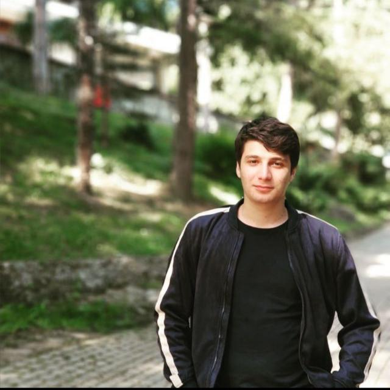

Mustafa
Kanat
WEB DEVELOPER
Merhaba
İşte ben kimim ve ne yapıyorum
25 Ağustos 1998 tarihinde Bartın'da doğdum. Lise eğitimimi Bartın Anadulu Öğretmen Lisesi'nde tamamladım. Ardından Uludağ İnşaat Mühendisliği Bölümü'nde lisans eğitimi aldım. Şuanda Uludağ Üniversitesi İnşaat Mühendisliği Bölümü Yapı Malzemeleri Anabilim Dalında yükseklisans yapmaktayım. Yükseklisans eğitimine devam ettiğim süreçte Python eğitimi aldım ve birkaç temel proje hazırladım. Ayrıca Turkcell Geleceği Yazanlar Akademisi'nde HTML ve CSS eğitimi aldım. Şuanda becerilerimi geliştirmek için Neos Akademide eğitim almaya devam ediyorum.